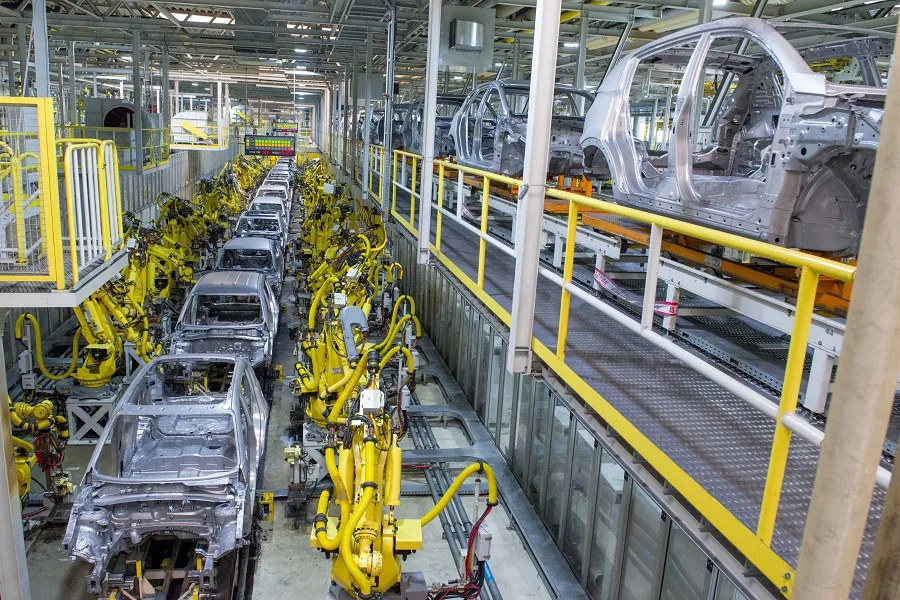
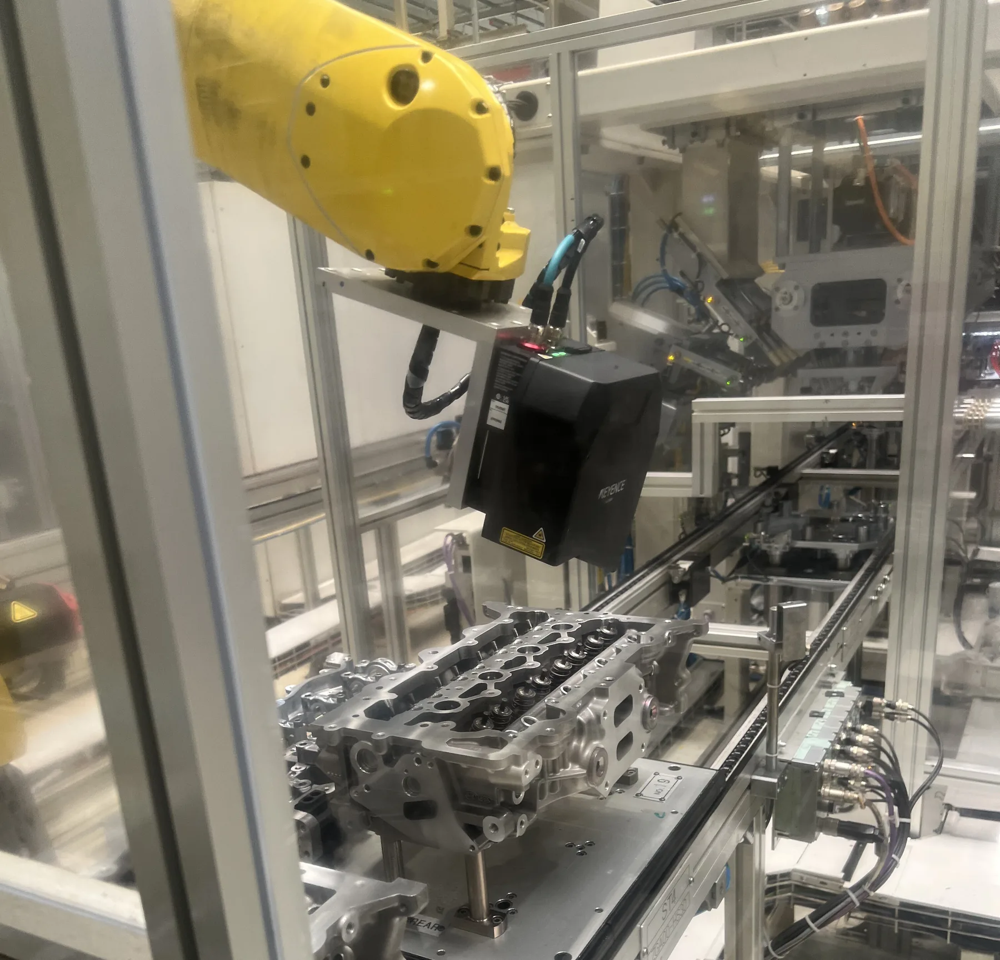
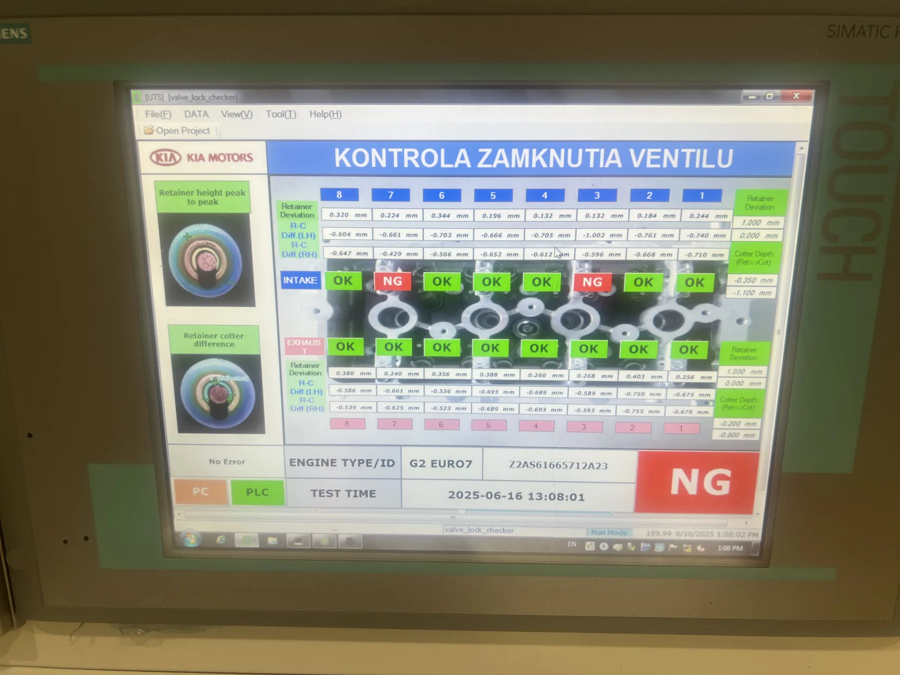

I spent the summer inside Kia's Žilina manufacturing facility, rotating through all five maintenance departments (Press, Body, Paint, Assembly and Engine) and leading the design of a fully automated robotic wheel-loading system.
Main project: automated wheel loading
I led the design and implementation of a robotic wheel-rim loading system, reporting directly to the Head of Group and the Assembly Manager. The cell removes three manual handling positions from the line and replaces them with a single oversight station, making the area safer and more consistent.
System design
- Robotic manipulation: Hyundai robotic arm with a Festo pneumatic gripper that grabs rim interiors, plus a suction-cup jig that strips the plastic layers between pallet stacks.
- Bi-directional conveyors: an intelligent conveyor network that lines up rim pallets in production order.
- Automated material handling: pallets are loaded and sequenced autonomously for the line.
- Oversight station: one operator booth for monitoring, reducing staffing in the area from three people to one.
Redundancy and failsafes
- Conveyor failure: pallet paths re-route automatically around a failed conveyor.
- Robotic arm backup: a second arm can take over if the primary goes down.
- Final failsafe: manual rim loading remains possible for emergencies.
Department rotations
Assembly
I worked on the main assembly line's automation, including the magnetic rail system that lifts vehicle undersides to the chassis, and supported a new model launch.
- Repaired and maintained EMS door carriers, replacing outdated hardware.
- Troubleshot the proprietary magnetic-induction robotic rail system.
- Performed PLC programming and tool-head tuning to resolve machine faults.
- Resolved machine interference issues during production ramp-up of the new model.

Engine
I implemented a vision system for quality control in engine assembly, combining 3D scanning with automated inspection.
- Installed a Keyence camera system to verify valve-spring alignment.
- Programmed the PLC logic that ties the vision system into the line.
- Developed the 3D-scan algorithm that flags misaligned springs.
- Built the inspection workflow that catches defects before assembly continues.


Press shop
I installed safety systems for die-changing operations while learning the stamping process from raw coil to formed panel.
- Installed a Keyence safety sensor system for the automated die-change machinery.
- Designed the safety protocol that keeps personnel out of the danger zone during die swaps.
- Dies are multi-tonne steel blocks, so handling procedures matter as much as the sensors.
Body shop
The body shop has the largest robotic workforce in the plant. I helped keep it running while building up my PLC programming skills.
- Maintained over 300 autonomous welding robots.
- Learned PLC programming for robotic control at scale.
- Troubleshot robot conflicts during the new model launch, where weld positions were millimetres off specification.
Body shop welding robots during troubleshooting.
Paint shop
I observed the full paint process: pre-treatment baths, coating application and sealing.
- Chassis immersion in more than ten treatment liquids for corrosion protection.
- Robotic sealer application at critical joints and seams.
- Paint quality control and environmental compliance systems.
The full manufacturing process
Rotating through every department gave me an end-to-end picture of how a car gets built:
- Press shop: raw coils stamped into body panels by precision dies.
- Body shop: 400+ robots weld the stamped panels into a chassis.
- Paint shop: chemical baths, then robotic sealing and paint.
- Assembly: final assembly with rigorous documentation and quality control.
- Quality systems: every tool torque is logged centrally with operator tracking for compliance.
I also observed the EV battery assembly station: automated intake from supplier trucks, autonomous transport to the line, precision battery-to-vehicle alignment and a fully automated installation with verification.
Skills and technologies
Robotic programming
Hyundai arm programming, motion planning and gripper control.
PLC programming
Logic for automated cells and machine control.
Vision systems
Keyence cameras, 3D scanning and automated inspection.
Safety systems
Keyence safety sensors and zone monitoring.
Pneumatics and conveyors
Festo grippers, actuation, and bi-directional conveyor programming.
CAD and layout
Cell layout and mechanical design for automation projects.
Impact
- Removed three manual handling positions through automation while improving safety.
- Built redundant failsafes so production continues through single-point failures.
- Improved engine assembly quality control with a new vision system.
- Strengthened die-change safety in the press shop.
- Supported a new model launch with minimal production disruption.
What I learned
Thousands of components, hundreds of robots and dozens of processes have to coordinate perfectly to build a car efficiently and safely. The internship taught me how much redundancy matters in automation, how large PLC systems are structured, and how quality control and legal compliance drive manufacturing decisions.
Seeing every department also showed how each stage constrains the next: press-shop tolerances affect body-shop welding, and paint-shop requirements shape assembly procedures.
Note on disclosure
Some proprietary details, specifications and documentation are covered by an NDA. Everything here has been reviewed to respect those agreements while accurately representing the scope and impact of the work.